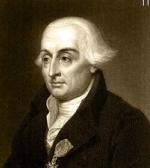

1736-1813
Joseph-Louis Lagrange

Portrait: Unknown authorUnknown author, CC0, Wikimedia Commons.
Events (7)
- 628Pell's equation and the chakravala method
systematiser · Number theory
- 1696Calculus of variations from the brachistochrone
developer · Optimization & control
- 1749D'Alembert and Euler: the wave equation and partial differential equations
developer · Differential equations
- 1785Potential theory in celestial mechanics and physics
developer · Differential equations
- 1788Lagrange's analytical mechanics
developer · Mathematical physics
- 1797Lagrange's algebraic foundation for the calculus
originator · Analysis
- 1799Impossibility of solving the general quintic by radicals
developer · Algebra